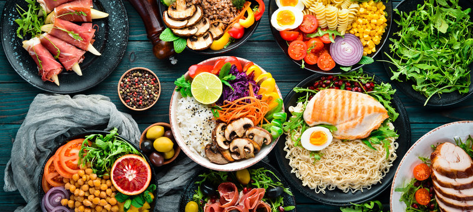
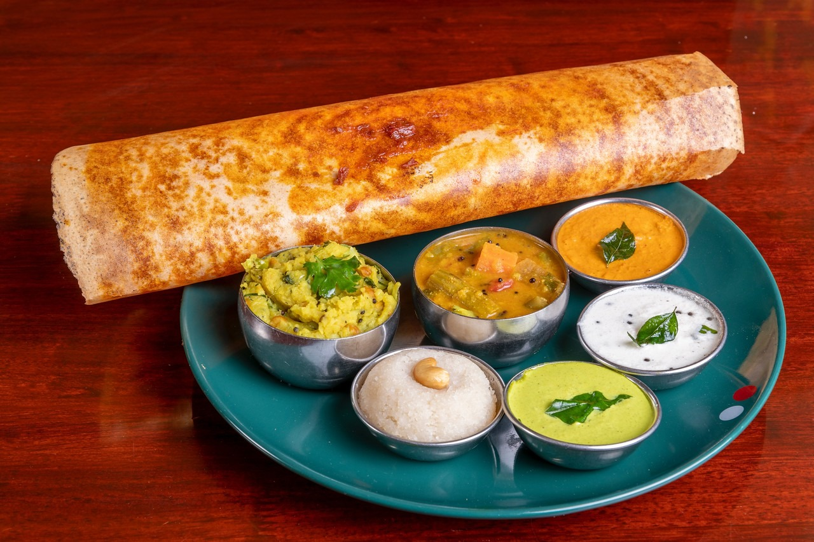

Delightfully Delicious, Foodie Paradise
Food Happiness Starts Here...


BREAKFAST
Idli is a popular South Indian breakfast dish made from fermented rice and urad dal (black lentils) batter. It's soft, fluffy, and typically served with chutney and sambar.

LUNCH
Rice is a versatile staple often served for lunch. It pairs perfectly with curries, dals, or stir-fries, providing a balanced and satisfying meal.

DINNER
Dosa is a crispy, thin pancake made from a fermented batter of rice and urad dal. It's light and nutritious, often served with chutneys and sambar.